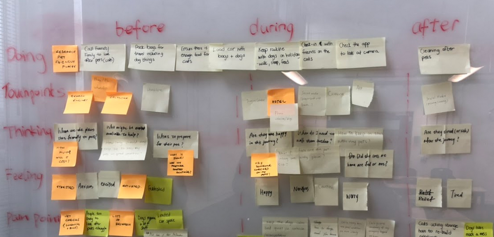
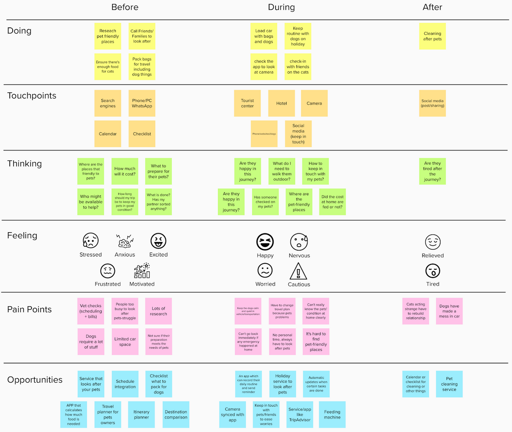
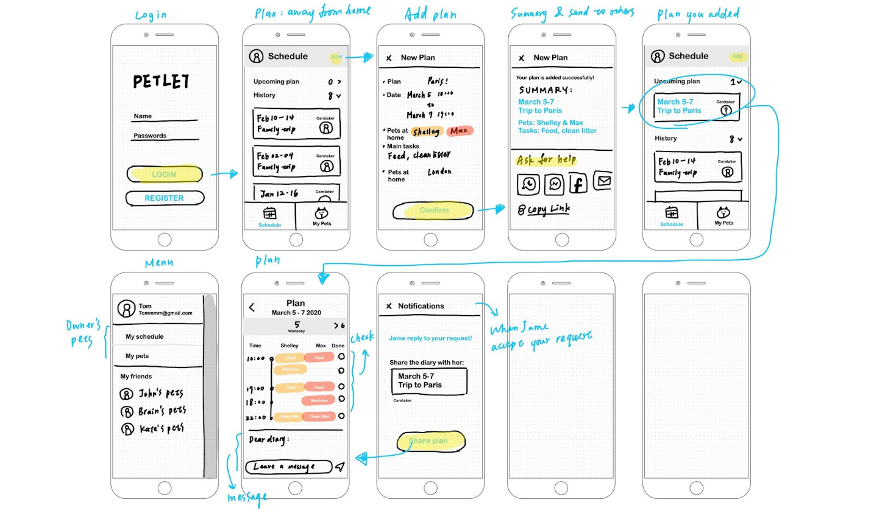
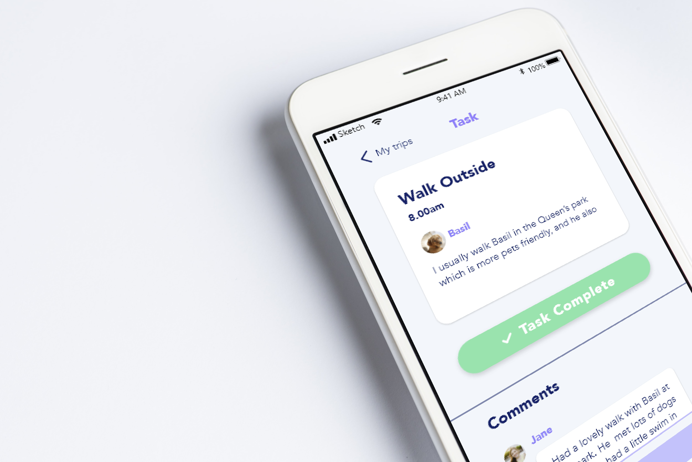

Live UX project
Petlet
- UI Design
- UX Design
- Prototyping
- Graphics
- Wireframing
- Adobe Suite
- Illustration
- User Interviews
Live UX project
TLDR: As a team we worked on a 3 month industrial project with the company Tails.com.The research based project focused on how to reduce the struggles of multi-species pet owners. I assisted the team with a design and creativity led approach and was responsible for most aspects of the visual deliverables.
The project followed the double diamond with empahsis being placed on the needs of the user. We made sure to use research processes that delivered real insights (card sorting, interviews, observation).
The main goal of the project was to improve the lives of people who are used to dealing with multiple pets. As pets are extremely personal and important, one of the biggest challenges was conducting research respectfully whilst gathering enough detail to produce a meaningful design solution.
To ensure that all the information was thoroughly reviewed personas, experience maps and storyboards were used. This helped to ensure that the most meaningful insights, with the greatest value to users could be concluded.
Protoypes were extensivley tested with defined target users.They were encouraged to interact with the prototypes so we could ensure it was intuitive.
The main goal of the project was to improve the lives of people who are used to dealing with multiple pets. As pets are extremely personal and important, one of the biggest challenges was conducting research respectfully whilst gathering enough detail to produce a meaningful design solution.
